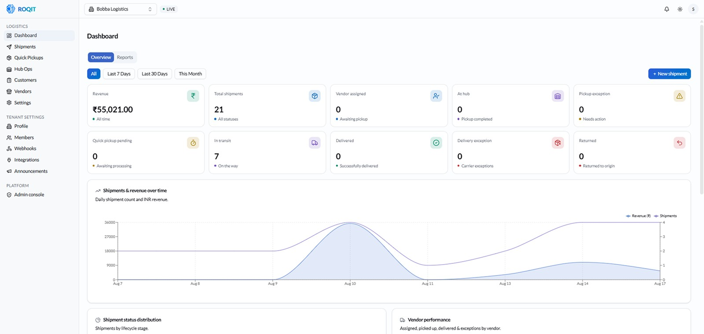
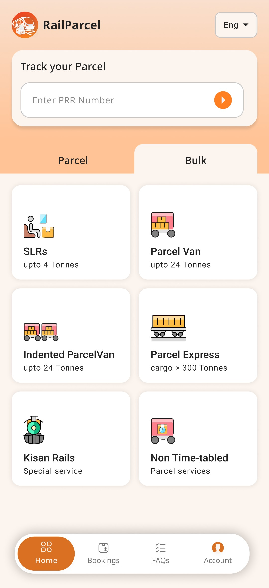
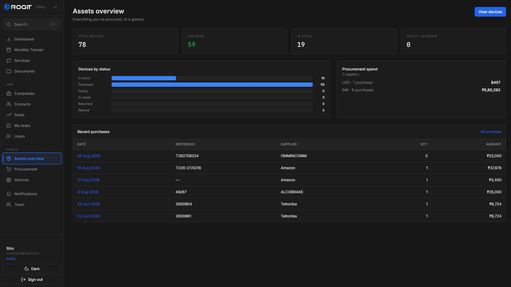

Hey, I’m Shiv 👋 — a product designer in Hyderabad.
I design B2B software for teams where a wrong click costs real money.
B2B tools people trust in the field. Zero to one, then watch the metrics. Six years: logistics to government scale. And I ship in code, so intent survives handoff.
Six years across logistics, fleet, banking analytics, and government-scale platforms. I own the problem from research to a shipped, measured product — and I ship in code, so the design doesn’t lose its intent at handoff.
The interface is the operation.
Three products I took from problem to shipped — first-mile logistics, government rail, and internal tooling.

A first-mile air-cargo platform on the live Emirates SkyCargo API — customer, admin & vendor portals plus a driver app, live in Bangalore & Hyderabad.

Indian Railways’ parcel network, off paper — a trilingual booking app across CRIS, SBI, and four logistics partners.

Designed and built a full-stack, role-based CRM solo in 15 days — replacing the spreadsheets that ran pipeline, billing, and assets for four teams.
I let AI carry the grunt work.
Not the design decisions — the slow parts around them. It’s how I designed and built a full-stack CRM, solo, in 15 days.
Compress research & ideation
AI maps each team’s workflow, pressure-tests the data model, and drafts edge cases — so discovery takes days, not weeks.
Design and ship, no handoff
With Claude Code and Cursor I prototype and deploy in code, so a design reaches production without losing its intent in translation.
Judgment stays human
AI clears the busywork; the schema, the role model, and the interface — where a wrong call costs real money — stay mine.
What I bring.
Six years of B2B product design — and a habit of shipping the thing I designed.
Deep B2B SaaS domain
Six years across logistics, fleet, banking analytics, and government-scale platforms — enterprise dashboards and multi-tenant systems.
Brainstorming & Ideation
I turn ambiguous problems into options fast — sketching, mapping flows, and pressure-testing ideas with the team before a pixel is drawn.
Design systems that scale
Built and maintained Figma systems that cut component duplication 60% and design-to-handoff time 30% across concurrent projects.
End-to-end ownership
From PRD and research through prototyping to a shipped, measured product — I own the whole path, not just the mockup.
Ships in code, not just Figma
When there’s no-one else to build it, I prototype and deploy full-stack — so a design reaches production without losing its intent at handoff.
Cross-functional operator
Fluent with PMs, engineers, data, and leadership; I mentor juniors and keep stakeholders aligned through delivery.
I go past the screen.
Practical, hands-on ground beyond visual design — so I can reason about the whole system, not just how it looks.
Tools & capabilities.
Where design meets engineering — from research and systems through to shipping in code.
Where I’ve been.
Six years across product and UX roles — from BookMyShow to leading design at ROQIT.
Product Designer
Design lead on India’s first OEM-agnostic asset and intelligence platform — a multi-tenant SaaS ecosystem spanning fleet, logistics, and multi-modal transport. I prototype and build directly in code, shipping RailParcel, Bobba Express, and an internal CRM from zero to production.
Senior UX/UI Designer
Lead designer on enterprise analytics engagements — business discovery through to Tableau dashboard delivery for Schneider Electric, Adani Ports, and Air India. Shipped 8+ dashboards and a Figma design system that cut design-to-handoff time 30%.
UI/UX Designer
Product design for banking analytics dashboards at Kotak Bank and SBI — restructuring dense financial data into clear, actionable views for relationship managers.
Freelance Design Consultant
UX/UI for web and mobile products through the COVID period — wireframing, prototyping, and handoff for early-stage clients.
UX/UI Designer
Redesigned the mobile ticket-booking flow end to end, cutting checkout time 30% by removing friction across high-traffic booking surfaces.
A designer who ships.
I’m Shiv, a product designer in Hyderabad. I came to design sideways — from a business-analytics background — which is probably why I’m most at home in data-dense B2B software, where the job is to make a complicated operation feel obvious.
Six years in, the through-line is clear: I gravitate to B2B products where the software carries the operation — relationship managers reading a bank’s position, dispatchers moving a fleet, a first-time user booking a parcel by rail. I want to be in the room where the tool has to work, not the room where it demos.
What I do differently is not stop at handoff. I prototype and ship in code — front-end, backend, and the database when there’s no-one else to build it — so a design doesn’t lose its intent on the way to production.
Get in touch
Best for senior IC roles, design leadership at B2B teams, or short advisory engagements on complex operational software.
Kind words.
A few words from people I’ve worked with.
An exceptional UI/UX designer. His ability to transform complex ideas into intuitive and visually appealing user experiences is truly impressive — a keen eye for detail, a deep understanding of user behavior, and a strong command of design tools and principles.
Shiv has a deep understanding of user-centered design principles and can always translate complex design problems into simple, intuitive solutions — with the zeal to work collaboratively across developers, product managers, and stakeholders to meet real user needs.
Shiv brings all his skills to the table as a UI/UX designer. Reliable, and he seamlessly understands the client’s requirements — his user-friendly designs made my work easy. Analytical, kind, and a pleasure to work with.